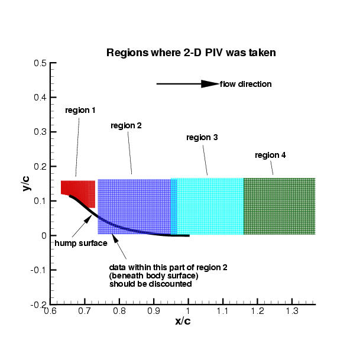
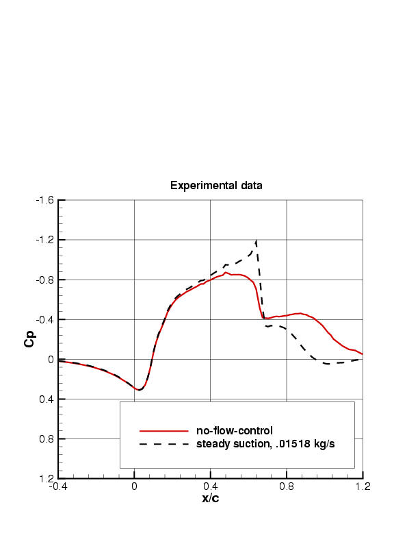
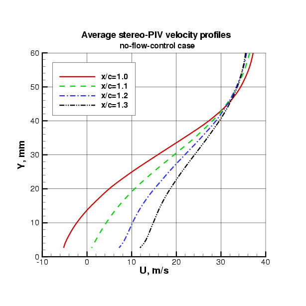
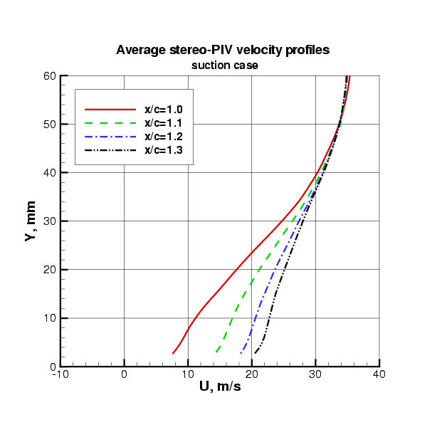
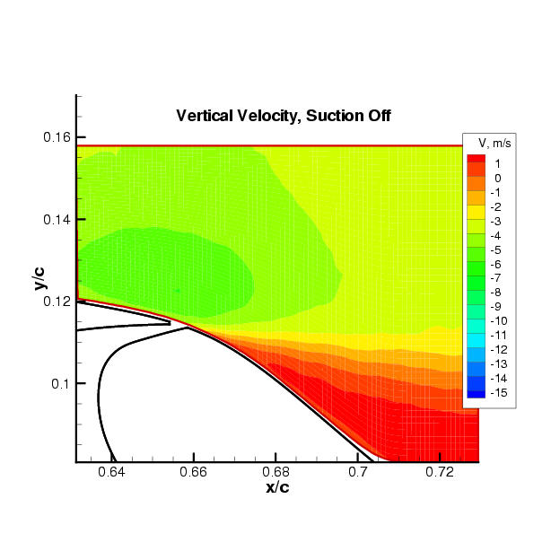
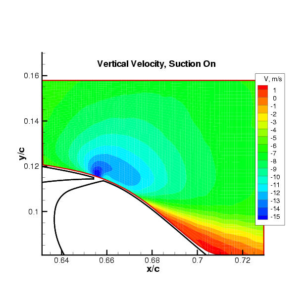
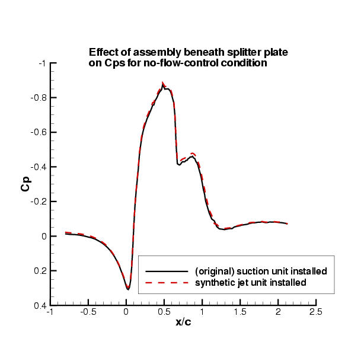
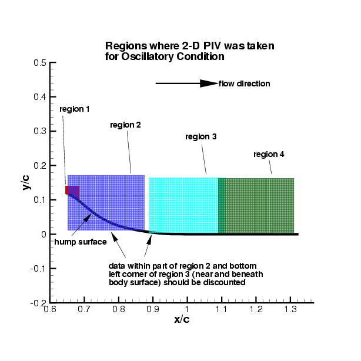
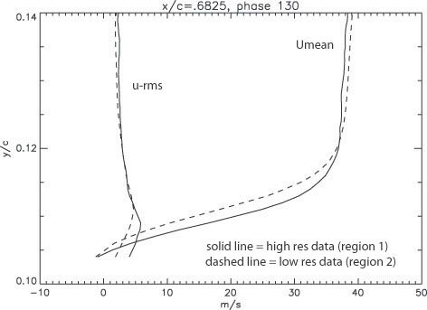
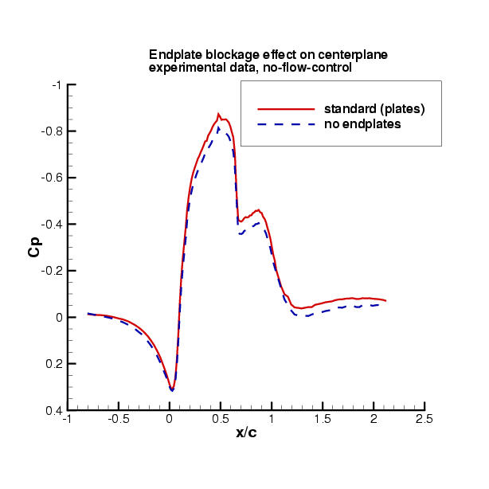

|
Langley Research CenterTurbulence Modeling Resource |
Exp: CFDVAL2004 Case 3 Experimental Data
Return to: CFDVAL2004 Case 3 - Intro Page
Return to: CFDVAL2004 - Intro Page Return to: Data from Experiments - Intro Page Return to: Turbulence Modeling Resource Home Page
Steady no-flow-control and suction experimental data for Case 3 Cp data: (Note: possible blockage effects in the experiment are not accounted for in this
data.) The pressure coefficients are all referenced to upstream "freestream"
conditions, near x/c=-2.14. The definition of pressure coefficient is
Cp=(p-pref)/(½rhorefuref2). Experimental Cf data (from oil-flow) are available only for the no-flow
condition in the following file:
Velocity profiles using stereo-PIV at x/c=1.0, 1.1, 1.2, and 1.3 for both no-flow-control and steady-suction conditions are given in the following file:
Note, from Greenblatt et al (AIAA J, 44(12):2820-2830, 2006): "...3-D PIV... consistently under-predicted the velocity by approximately 3% of Uinf. This bias was consistent across the measurement area... Consequently, 3-D PIV was used to assess spanwise variation in the flow, but the absolute velocities were not relied upon as being sufficiently accurate for the evaluation of computational models." In other words, the velocity data from the 2-D PIV (below) is believed to be more accurate than that from the stereo-PIV.
Velocity and turbulence data using 2D-PIV along the tunnel center-plane, roughly covering the region 0.63 < x/c < 1.39 for both no-flow-control and steady-suction conditions are given in the following file:
|
 |
For convenience, extracted and nondimensionalized velocity and turbulence profiles (from Giveout_Case3_2DPIVnew.tar.gz) at selected x/c stations for both no-flow-control and steady-suction conditions are given in the following file:
Plot of steady-state streamwise center-span surface pressure coefficients:
|
 |
Plot of steady-state velocity profiles from stereo-PIV:
|
 |
 |
Plot of steady-state vertical velocity from 2D-PIV, near slot:
|
 |
 |
Unsteady oscillatory-control synthetic jet experimental data for Case 3
(The time at which peak BLOWING velocity was measured OUT of the slot corresponds to approximately Phase=170 deg.)
Long-time-averaged Cp data:
(Note: possible blockage effects in the experiment are not accounted for in this data.) The pressure coefficients are all referenced to upstream "freestream" conditions, near x/c=-2.14. The definition of pressure coefficient is Cp=(p-pref)/(½rhorefuref2).
Also note: the oscillatory-control synthetic jet condition used a different unit ("synthetic jet unit") underneath the splitter plate, feeding into the slot (as opposed to the "suction unit" used for the original no-flow-control and steady-suction conditions). As a result, the blockage beneath the splitter plate was different, which slightly affected the incoming flow field above the plate. Mean-flow quantities and turbulence data were re-taken with the "synthetic jet unit" in place; these are given in the file Giveout_Case3_2DPIVsynthunit.tar.gz (621 kB), posted 30 September 2004. The Cps for no-flow-control were also re-taken with the "synthetic jet unit" in place; these are given in the file noflow_synthunit_cp.dat, posted 20 September 2004. These Cp data are compared with the no-flow Cp data using the original "suction unit" in the following figure:
|
 |
Phase-averaged Cp data at a point just inside slot and at 19 x/c wall locations:
2D-PIV data along tunnel center-plane:
|
 |
For convenience, extracted and nondimensionalized velocity and turbulence profiles (from PhasePIVData1.tar.gz, PhasePIVData2.tar.gz, PhasePIVData3,tar,gz, and PhasePIVData4.tar.gz) at selected x/c stations at 4 different phases in the cycle are given in the following file:
Region 1 is a high resolution data set covering the immediate area near the slot exit. This high quality data set is able to show fine details of flowfield separation due to its high magnification.
Region 2 is a lower resolution data set that overlaps part of Region 1. The differences seen between Regions 1 and 2 are due not only to resolution differences but also to Region 2 imaging problems, near the wall, from x/c=0.65 to 0.76. In this x/c range Region 2 mean velocity is within 20% or better compared with Region 1 data and within 33% in rms velocity for the following phases: 000-020, 080, 110, 130-230, 250-340 (other phases in the Region 2 dataset are less accurate). The figure below shows a typical comparison between Region 1 and Region 2 data at a common station within the range from x/c=0.65 to 0.76.
In Regions 3 and 4, an independent comparison of the 2D PIV data with hotwire data and 3D PIV data showed agreement within 2-3% in the mean at x/c=1.3. The u-rms measurements at x/c=1.3 agreed within the estimated statistical convergence band of 16%. Therefore the PIV measurements in Regions 3 and 4 are estimated to be accurate to within these amounts.
|
 |
Note: Case 3 experimental data are being reported in the following coordinate system: x-direction downstream, y-direction up, z-direction spanwise. The coordinate system's origin (0,0,0) is on the tunnel splitter plate at the start of the hump, on the model centerline.
Experimentalist's Notes & Additional Data
1. Some informal notes and figures (for information only)
are provided in the following Microsoft PowerPoint
file: Data_Summary.ppt, (371 kB),
updated 24 November 2003. 2. For the interested investigator, additional suction Cp data at different suction
levels from the workshop condition are given in the following files:
3. As discussed elsewhere on this website, throughout the entire experiment, endplates (positioned on both sides of the model near the side walls) were employed to improve the two-dimensionality of the flowfield. However, they also had a blockage effect. The effect of the endplates on the centerplane streamwise surface pressure coefficient (no-flow condition) can be seen in the following figure, which plots the standard result (with endplates) against the result when the endplates were temporarily removed (noflow_cp_noplates.dat, posted 4 August 2004):
|
 |
4. An Excel file summarizing Cp and Cprms data with the synthetic jet unit in place is given in DataSummaryZEOJetCFD.xls, (158 kB), updated 20 September 2004
5. Two .avi movie files illustrate the oscillatory condition flowfield:
6. Two Excel files of data for the oscillatory condition, giving systematic variation of Cp data with frequency and peak slot velocity:
Return to: CFDVAL2004 Case 3 - Intro Page
Return to: CFDVAL2004 - Intro Page Return to: Data from Experiments - Intro Page Return to: Turbulence Modeling Resource Home Page
Responsible NASA Official:
Ethan Vogel
Page Curator:
Clark Pederson
Last Updated: 05/15/2021